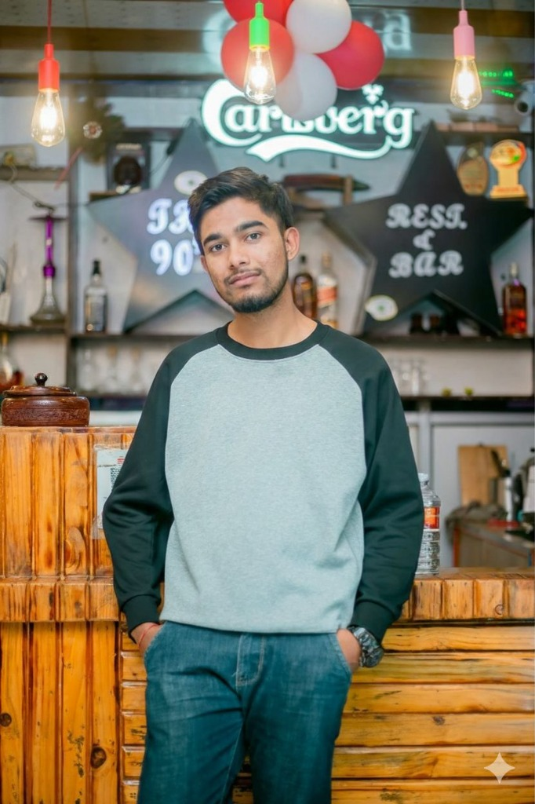

Veterinary Student & Aspiring Veterinarian
I'm a dedicated veterinary student from Chitwan, Nepal, born on August 8, 2006. I'm currently pursuing my Bachelor's degree at the Agriculture and Forestry University (AFU), where I maintain a strong academic focus on animal health and surgery.
My passion for animal care is matched by my objective to gain international clinical experience. I am committed to advancing my education abroad to master modern veterinary techniques and contribute to global animal welfare standards.
Outside of my clinic work, I am an avid PUBG player, which helps me develop strategic thinking and maintain a balanced lifestyle.
Agriculture and Forestry University (AFU), Nepal
Consistently maintaining high academic standing with a focus on evidence-based veterinary medicine.
Assisted senior veterinarians in daily clinical rounds, surgical preparation, and patient monitoring. Gained hands-on experience in diagnostic procedures for small and large animals.
Actively participated in district-wide vaccination initiatives, administering over 200+ vaccinations and educating local communities on zoonotic disease prevention.
Conducted technical visits to advanced poultry production facilities in Thailand. Observed international standards in biosecurity, automated feeding systems, and large-scale livestock management within the family poultry business framework.
Email: khanalnirdosh99@gmail.com
Location: Chitwan, Nepal